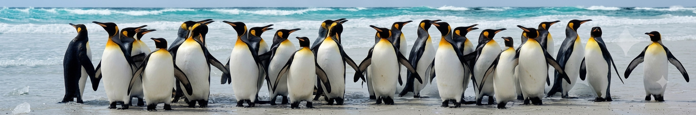
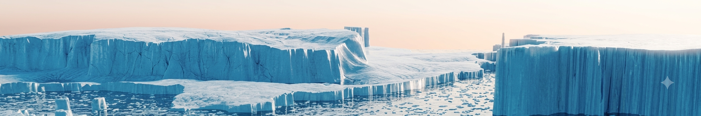
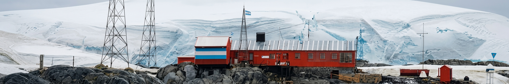
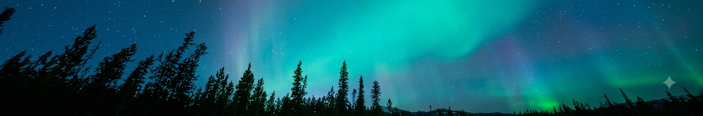

National Centre for Polar and Ocean Research — Ministry of Earth
Sciences
Scattered research, held together as one living archive.
Expedition reports, datasets, publications, photographs and video from
India's polar and ocean research programmes are usually spread across
drives, drawers and departments. Odyssey brings all of it into one
connected record, so it can be found, understood and reused — by
researchers and by the public.
Search the archive
Antarctica

Wildlife

Arctic

Research Station

Aurora
Two things, done well
Instead of treating every file as an island, Odyssey does two simple
things with everything it holds.
Easy to discover
Researchers, expeditions, datasets, publications, photographs and
activities are organized and linked to one another, so a single
record opens onto its full context instead of standing alone.
Search across expeditions, researchers, datasets and reports
from one search bar
Open any record and see everything connected to it — the
expedition it came from, the people involved, the data it
produced
Browse by researcher, season or station instead of digging
through folders
Easy to communicate
An authoritative research report can be turned into a
reader-friendly article, social posts and visual content — drafted
from the source material, and reviewed by staff before anything is
published.
Get a plain-language summary of a dense research paper, ready
for a general reader
Generate ready-to-edit social media posts straight from a
report or dataset
Every auto-drafted summary or post is reviewed by staff before
it goes public
Research→Organize→Connect→Discover→Communicate
Odyssey Mentor
Guidance connecting polar research with the next generation.